Setup
tcrdistR provides plotting functions built on ggplot2. All return ggplot objects that can be further customized.
Distance Heatmap
Visualize the pairwise distance matrix as a heatmap. Note that
plot_tcrdist_heatmap() takes a precomputed distance matrix,
not a TCR data.frame:
library(ggplot2)
dist_mat <- tcrdist_matrix(pa_sub, organism = "mouse")
plot_tcrdist_heatmap(dist_mat)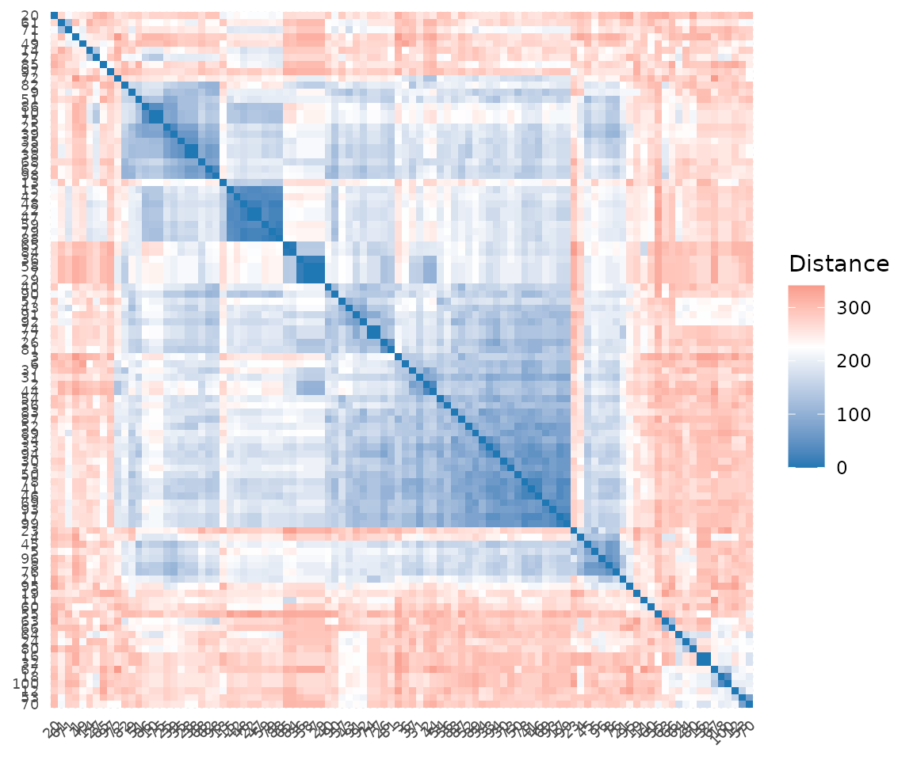
With hierarchical clustering reordering (the default) and custom labels:
# Use a small subset with unique labels for readability
small_mat <- dist_mat[1:20, 1:20]
plot_tcrdist_heatmap(
small_mat,
labels = paste0(pa_sub$cdr3b[1:20], " (", seq_len(20), ")"),
cluster = TRUE,
title = "PA-specific TCR Distances"
)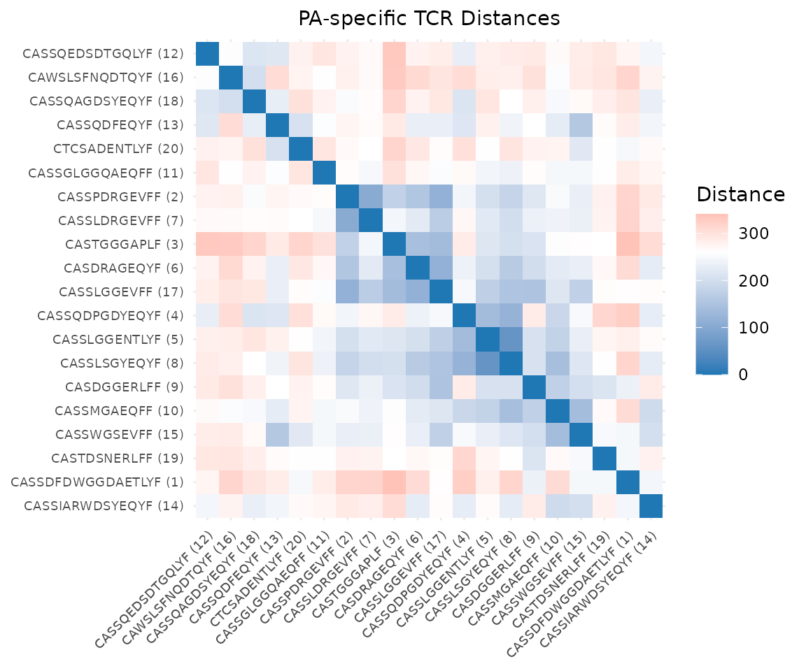
Dendrogram
Plot a hierarchical clustering dendrogram. Unlike the heatmap,
plot_tcrdist_dendrogram() takes a TCR data.frame and
computes distances internally:
plot_tcrdist_dendrogram(pa_sub, organism = "mouse")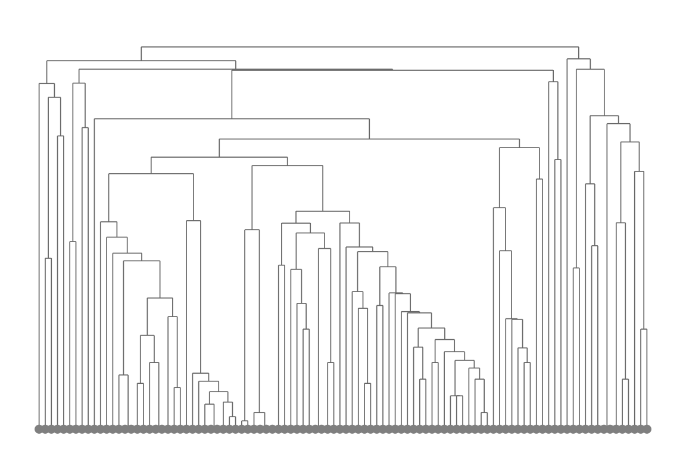
Color by a grouping variable:
# Mix epitopes for a more interesting dendrogram
mixed <- dash[dash$epitope %in% c("PA", "NP"), ]
mixed_sub <- mixed[sample(nrow(mixed), 80), ]
plot_tcrdist_dendrogram(
mixed_sub, organism = "mouse",
color_by = mixed_sub$epitope,
title = "PA vs NP TCRs"
)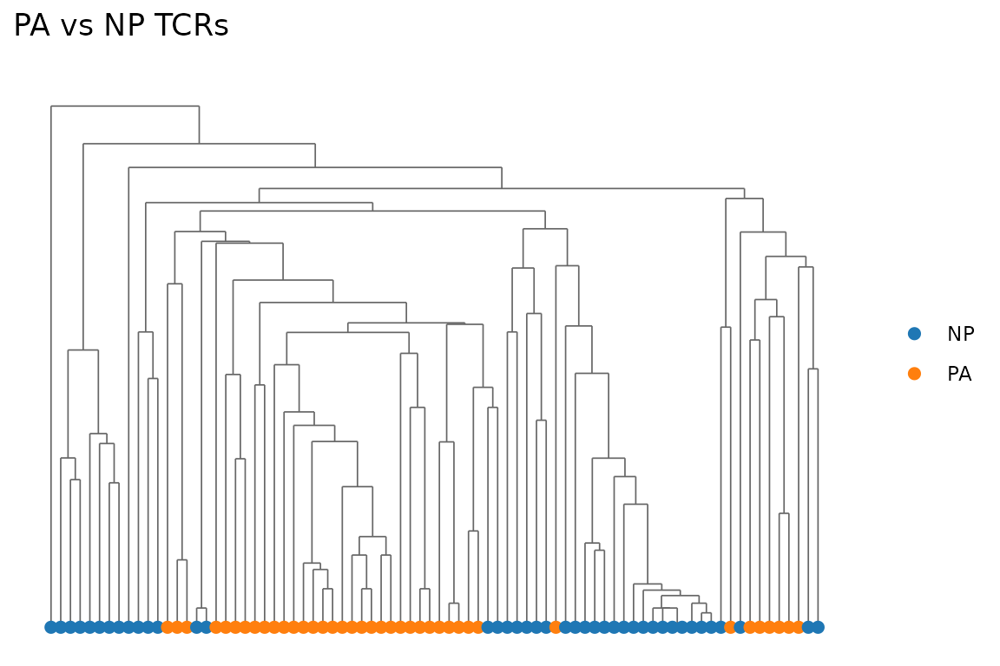
Distance Distribution
Histogram and density of pairwise distances. Like the heatmap, this takes a precomputed distance matrix:
plot_distance_distribution(dist_mat)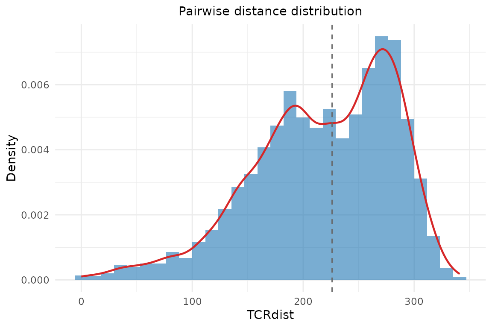
With custom bin width:
plot_distance_distribution(dist_mat, binwidth = 10,
title = "PA TCR distance distribution")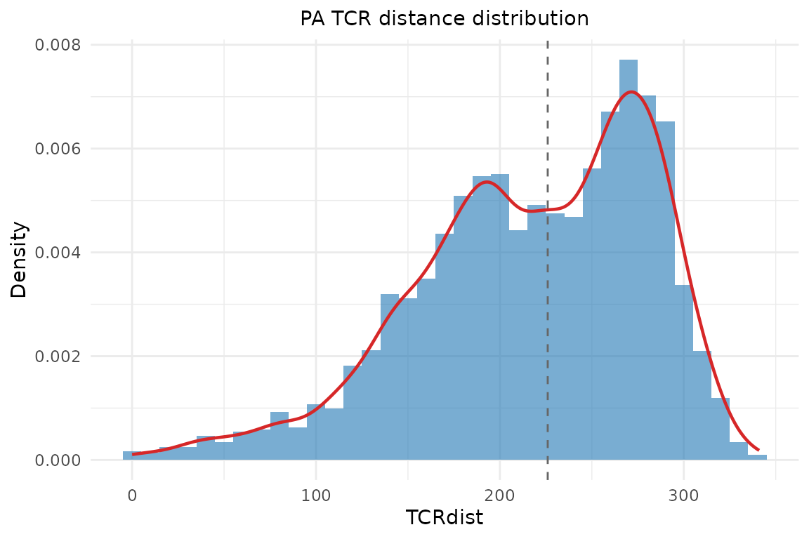
PCA Scatter Plot
2D scatter plot from kernel PCA or any dimensionality reduction.
plot_tcr_scatter() takes a N x 2 coordinate matrix:
pca <- compute_tcrdist_kernel_pca(
mixed_sub, organism = "mouse", n_components = 5L
)
plot_tcr_scatter(
pca$embeddings[, 1:2],
color_by = mixed_sub$epitope,
title = "Kernel PCA: PA vs NP",
point_size = 2
)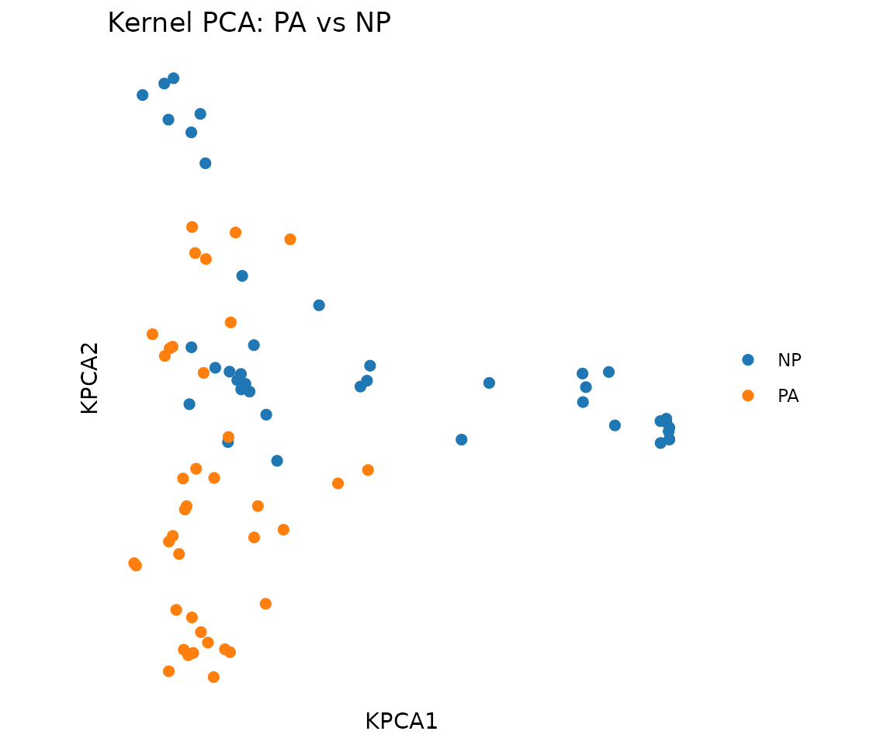
Color by a continuous variable (e.g., third principal component):
plot_tcr_scatter(
pca$embeddings[, 1:2],
color_by = pca$embeddings[, 3],
title = "Colored by KPC3",
point_size = 2,
legend_title = "KPC3"
)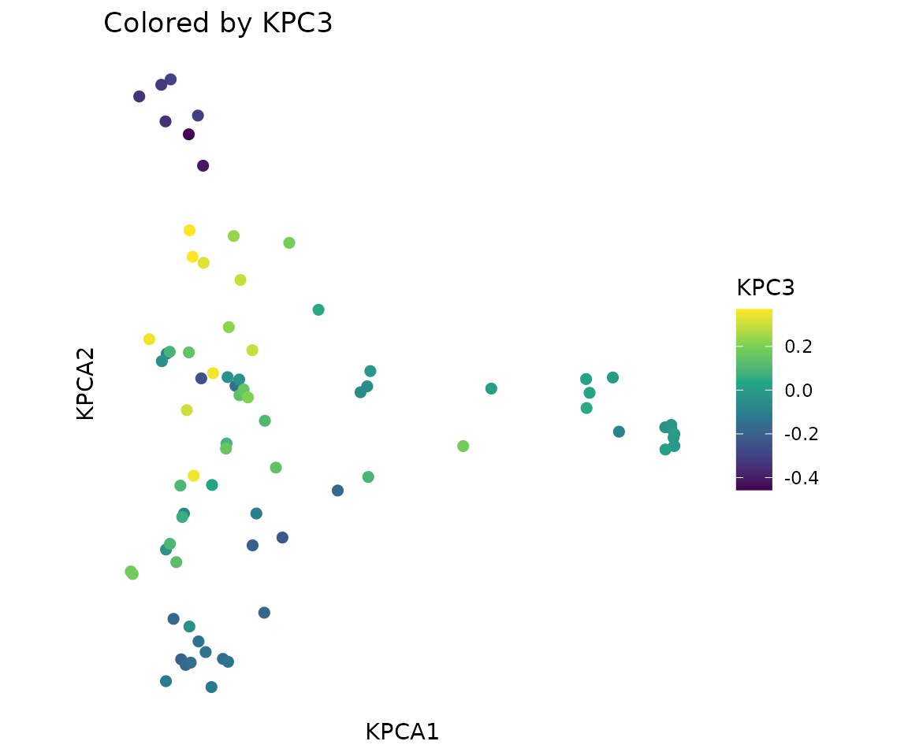
Gene Usage
Horizontal bar chart of V-gene frequencies.
plot_gene_usage() takes a data.frame and a column name:
plot_gene_usage(pa, "va", title = "V-alpha usage (PA)")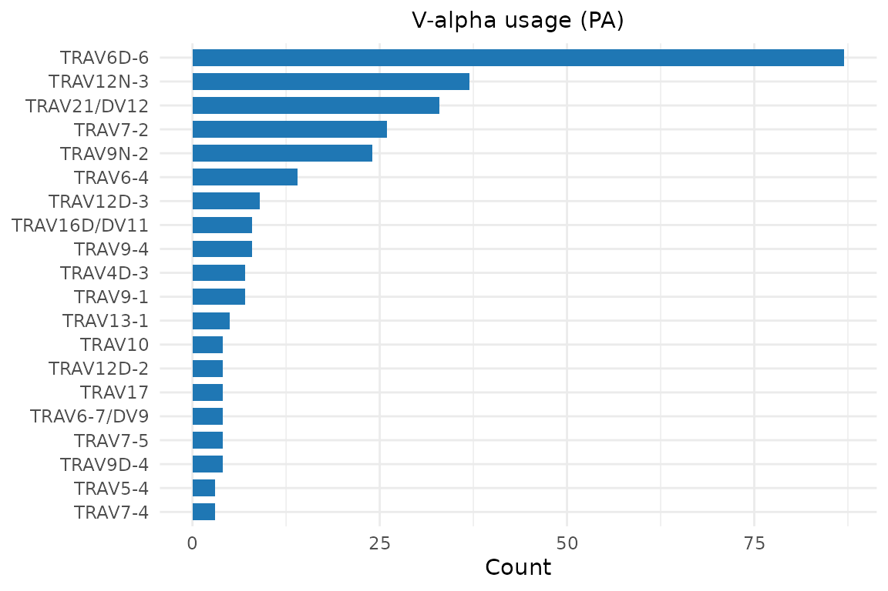
plot_gene_usage(pa, "vb", title = "V-beta usage (PA)")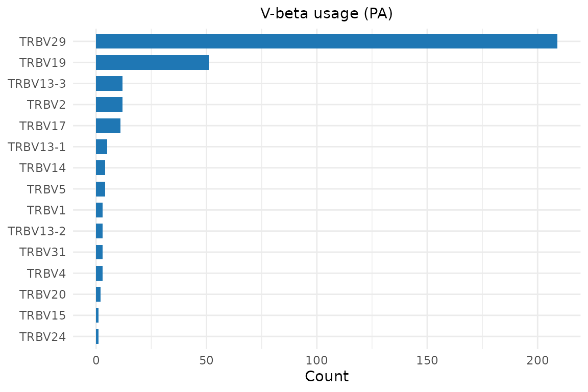
V/J Gene Logos
plot_vj_gene_logo() renders gene names as text glyphs
whose height is proportional to frequency — a “sequence logo” style for
gene usage:
plot_vj_gene_logo(pa$vb, organism = "mouse",
gene_type = "V", chain = "beta")
plot_vj_gene_logo(pa$ja, organism = "mouse",
gene_type = "J", chain = "alpha")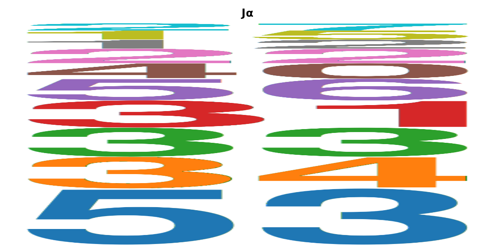
CDR3 Sequence Logos
Display amino acid frequency at each position as a sequence logo. The logo construction aligns sequences using BLOSUM62-optimal gap placement:
plot_cdr3_logo(pa_sub$cdr3b, chain = "beta", method = "bits",
title = "CDR3-beta logo (PA)")
#> Warning: `aes_string()` was deprecated in ggplot2 3.0.0.
#> ℹ Please use tidy evaluation idioms with `aes()`.
#> ℹ See also `vignette("ggplot2-in-packages")` for more information.
#> ℹ The deprecated feature was likely used in the ggseqlogo package.
#> Please report the issue at <https://github.com/omarwagih/ggseqlogo/issues>.
#> This warning is displayed once per session.
#> Call `lifecycle::last_lifecycle_warnings()` to see where this warning was
#> generated.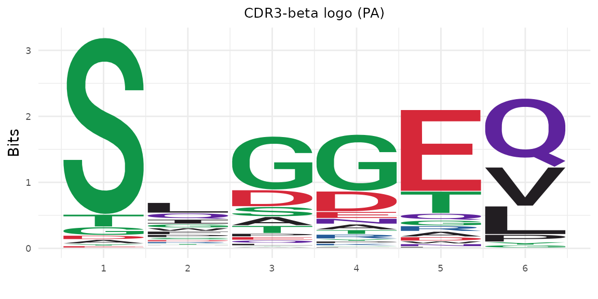
Frequency (“prob”) mode:
plot_cdr3_logo(pa_sub$cdr3a, chain = "alpha", method = "prob",
title = "CDR3-alpha logo (PA)")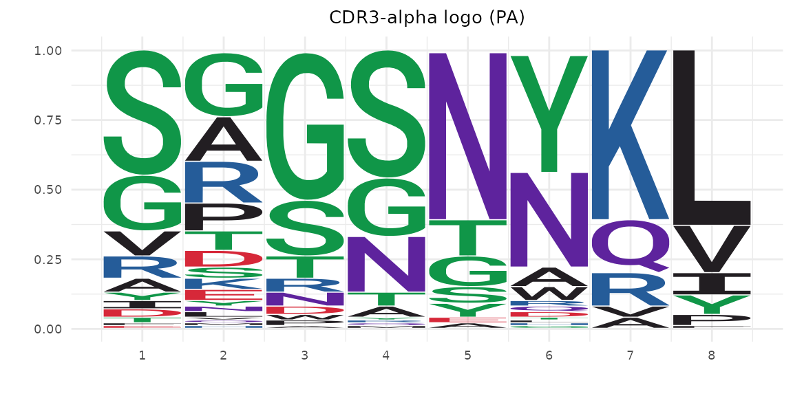
Junction Bars
compute_nucseq_src() analyzes CDR3 nucleotide sequences
to identify V/N/D/J segment origins. Pass the result to
plot_cdr3_logo() with
show_junction_bars = TRUE to display the rearrangement
structure:
src <- compute_nucseq_src(pa_sub, organism = "mouse", chain = "beta")
plot_cdr3_logo(pa_sub$cdr3b, chain = "beta",
nucseq_src = src, show_junction_bars = TRUE,
title = "CDR3-beta with junction bars (PA)")
#> Scale for x is already present.
#> Adding another scale for x, which will replace the existing scale.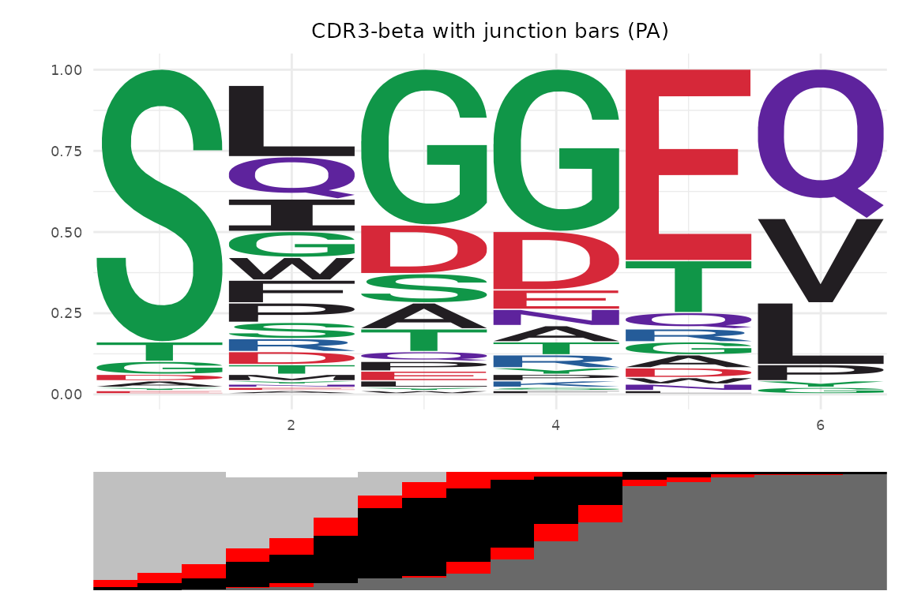
TCR Logo Panel
plot_tcr_logo_panel() combines V-gene logos, CDR3
sequence logos with junction bars, and J-gene logos for both chains into
a single composite panel:
plot_tcr_logo_panel(pa_sub, organism = "mouse",
title = "PA-specific TCR rearrangement")
#> Scale for x is already present.
#> Adding another scale for x, which will replace the existing scale.
#> Scale for x is already present.
#> Adding another scale for x, which will replace the existing scale.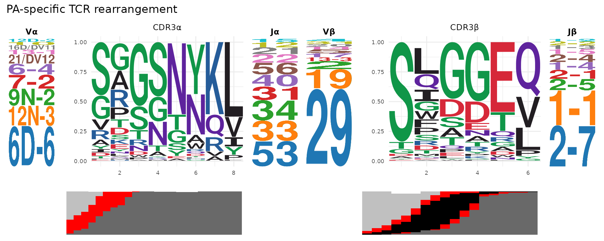
TCR Network Plot
Visualize TCR similarity as a network graph. Nodes are TCRs, edges connect TCRs within a distance threshold. Requires the igraph package.
# Build network with auto-detected threshold
net <- compute_tcr_network(pa_sub, organism = "mouse")
#> Auto-detected distance threshold: 216.7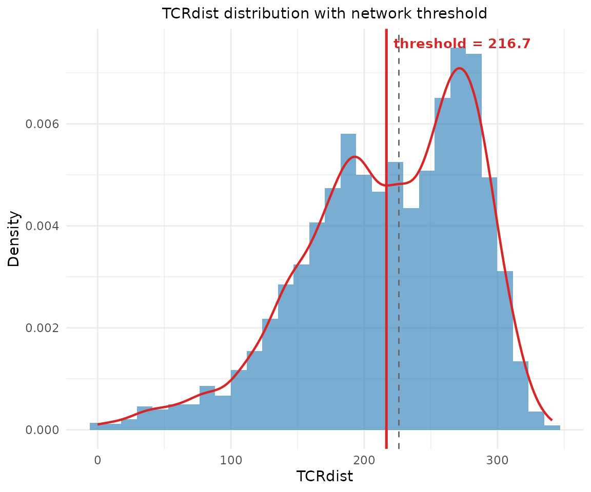
# Color by a vertex attribute (stored from the input data.frame)
plot_tcr_network(net, color_by = "subject",
vertex_size = 3, title = "PA TCR Network")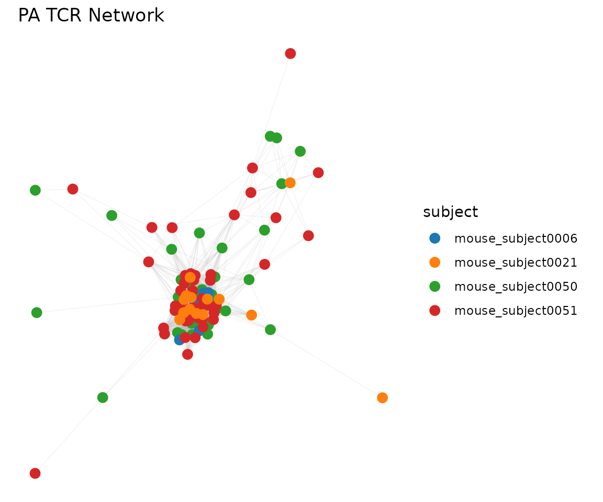
Control the threshold and prune isolated nodes:
net2 <- compute_tcr_network(pa_sub, organism = "mouse",
threshold = 48, min_edges = 2)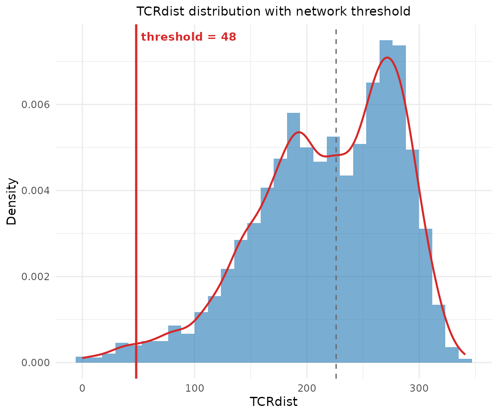
plot_tcr_network(net2, vertex_size = 3,
title = "Threshold=48, min_edges=2")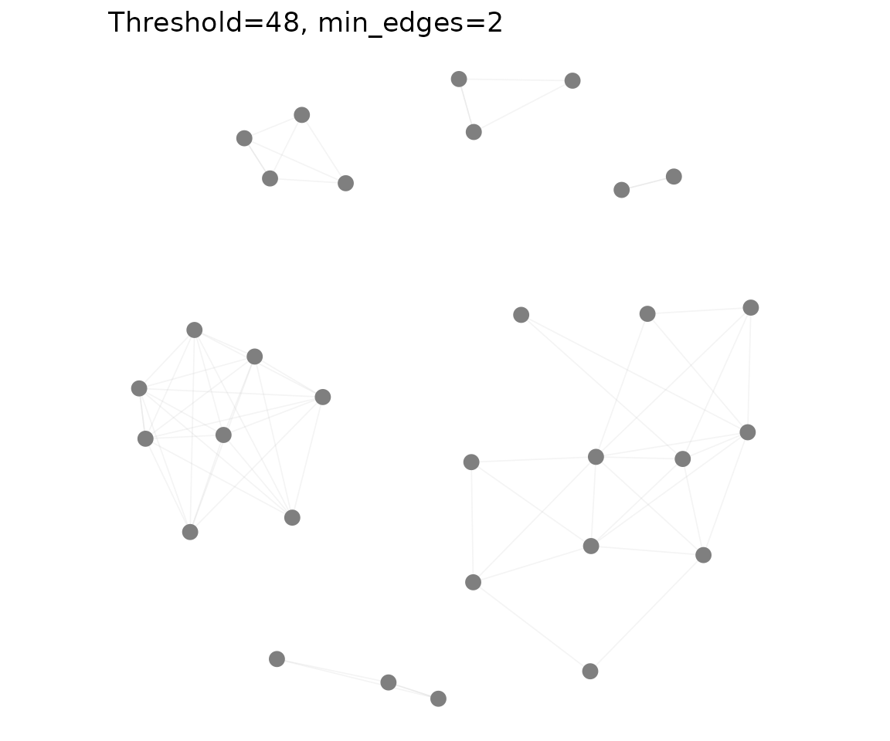
Combining Plots
Use the patchwork package to arrange multiple plots:
library(patchwork)
p1 <- plot_tcrdist_heatmap(dist_mat[1:30, 1:30], title = "Heatmap")
p2 <- plot_distance_distribution(dist_mat, title = "Distribution")
p3 <- plot_gene_usage(pa, "va", title = "V-alpha")
p4 <- plot_gene_usage(pa, "vb", title = "V-beta")
(p1 | p2) / (p3 | p4) +
plot_annotation(title = "PA Repertoire Overview")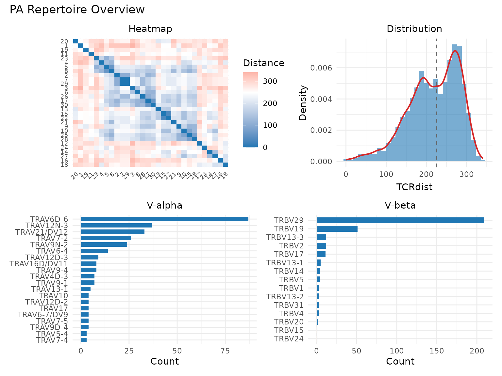
Saving Publication-Quality Figures
All tcrdistR plot functions return ggplot objects, so you can use
ggplot2::ggsave() to export high-resolution figures:
library(ggplot2)
p <- plot_tcr_scatter(
pca$embeddings[, 1:2],
color_by = mixed_sub$epitope,
title = "Kernel PCA",
point_size = 2
)
# PDF (vector format, best for journals)
ggsave("figure1.pdf", p, width = 6, height = 5)
# PNG (raster, good for presentations)
ggsave("figure1.png", p, width = 6, height = 5, dpi = 300)
# Customize theme for publication
p + theme(
text = element_text(size = 14),
plot.title = element_text(size = 16, face = "bold"),
legend.position = "bottom"
)Session Info
sessionInfo()
#> R version 4.6.1 (2026-06-24)
#> Platform: x86_64-pc-linux-gnu
#> Running under: Ubuntu 24.04.4 LTS
#>
#> Matrix products: default
#> BLAS: /usr/lib/x86_64-linux-gnu/openblas-pthread/libblas.so.3
#> LAPACK: /usr/lib/x86_64-linux-gnu/openblas-pthread/libopenblasp-r0.3.26.so; LAPACK version 3.12.0
#>
#> locale:
#> [1] LC_CTYPE=C.UTF-8 LC_NUMERIC=C LC_TIME=C.UTF-8
#> [4] LC_COLLATE=C.UTF-8 LC_MONETARY=C.UTF-8 LC_MESSAGES=C.UTF-8
#> [7] LC_PAPER=C.UTF-8 LC_NAME=C LC_ADDRESS=C
#> [10] LC_TELEPHONE=C LC_MEASUREMENT=C.UTF-8 LC_IDENTIFICATION=C
#>
#> time zone: UTC
#> tzcode source: system (glibc)
#>
#> attached base packages:
#> [1] stats graphics grDevices utils datasets methods base
#>
#> other attached packages:
#> [1] patchwork_1.3.2 ggplot2_4.0.3 tcrdistR_0.1.0
#>
#> loaded via a namespace (and not attached):
#> [1] Matrix_1.7-5 gtable_0.3.6 jsonlite_2.0.0 compiler_4.6.1
#> [5] Rcpp_1.1.2 jquerylib_0.1.4 systemfonts_1.3.2 scales_1.4.0
#> [9] textshaping_1.0.5 png_0.1-9 yaml_2.3.12 fastmap_1.2.0
#> [13] lattice_0.22-9 R6_2.6.1 labeling_0.4.3 igraph_2.3.3
#> [17] knitr_1.51 desc_1.4.3 pillar_1.11.1 bslib_0.12.0
#> [21] RColorBrewer_1.1-3 rlang_1.3.0 cachem_1.1.0 xfun_0.60
#> [25] fs_2.1.0 sass_0.4.10 S7_0.2.2 otel_0.2.0
#> [29] viridisLite_0.4.3 cli_3.6.6 magrittr_2.0.5 pkgdown_2.2.1
#> [33] withr_3.0.3 digest_0.6.39 grid_4.6.1 lifecycle_1.0.5
#> [37] vctrs_0.7.3 RSpectra_0.16-2 evaluate_1.0.5 glue_1.8.1
#> [41] farver_2.1.2 ragg_1.5.2 ggseqlogo_0.2.2 rmarkdown_2.31
#> [45] pkgconfig_2.0.3 tools_4.6.1 htmltools_0.5.9